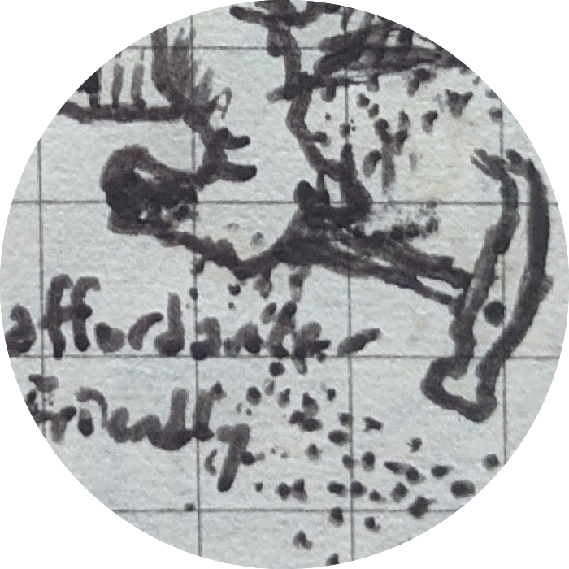

Contact:
lgularte [preposition] tulane.edu
Brown-related:
substitute "brown.edu"
Much of my philosophical work is focused on negative emotion(s) and suffering in particular — including what it is, why it matters (if it does), what to do about it, and even what role it plays in our sense of being an agent or having a self.
My cognitive science MSc thesis (which I defended in April 2024 in Michael Frank's Laboratory for Neural Computation and Cognition) explores the relationship between negative and positive emotion ('affective valence') and the so-called reward and punishment system, best known for its role in reinforcement learning.
Publications
Suffering is bad (Synthese, 2023)
Thesis: Necessarily, everyone would be intrinsically against the fact that anyone else was suffering, if they fully understood that fact; and that partially explains suffering’s 'agent-neutral' badness.
Abstract
Suffering, I argue, is bad. This paper supports that claim by defending a somewhat bolder-sounding one: namely that if anyone — even a sadistic 'amoralist' — fully understands the fact that someone else is suffering, then the only evaluative attitude they can possibly form towards the person's suffering as such is that of being intrinsically against it. I first argue that, necessarily, everyone is disposed to be intrinsically against their own suffering experiences, holding fixed their specific overall degree of emotional aversiveness, because any evaluative attitude other than 'being against' — including mere indifference — would in certain key circumstances make our suffering less emotionally aversive and thus different from the suffering experience (stipulatively) at issue. Second, fully understanding that someone else is having a given experience — Mary's experiencing a vividly blue sky, say, or Job's experiencing heart-rending grief — requires that we represent experientially their very instance of that experience-type (it requires, in other words, token phenomenal concepts). The result is that what goes for our own suffering goes for others', too: maintaining an accurate experiential representation of the fact that someone else is having a suffering experience with a specific degree of overall emotional aversiveness is only compatible with coming to be intrinsically against their suffering. So suffering is — 'objectively' — bad: it's only possible to respond with indifference towards anyone's suffering if we don't fully understand that they are suffering in the first place.
Papers in preparation

Negative affect and the puzzle of fun desire-frustration
This paper defends my view of affective valence in detail, primarily by laying out its advantages over the going alternatives. The main advantages are (i) its compatibility with the findings and guiding assumptions of active researchers in affective and decision neuroscience, (ii) its relative simplicity, and especially (iii) its ability to handle the puzzle in the title: the puzzle of 'fun desire-frustration.'
More details
The puzzle is a problem for all theories of affective valence that try to cash out the experiential difference between positive and negative affect as the difference between satisfied and frustrated desires or desires that something be or not be the case. I give a series of examples — enjoying a challenge, for instance — that show, against those proposals, that we don't always feel to any degree negative about having our desires frustrated or in virtue of desiring that something not be the case. I propose instead that we distinguish positive and negative affect not in terms of their intentional objects but in terms of their 'attentional mode,' specifically as constituted by the way they motivate us with respect to their intentional objects: we feel negatively or positively towards something if we're motivated (roughly) against or towards it, respectively — where those are ultimately to be understood in terms of their role in the reward and punishment system familiar from the reinforcement learning and decision-making literature.
 Suffering and attention
Suffering and attention
This paper gives a motivation- and attention-centered account of negative affect and an account of suffering as attention-controlling negative affect, and then uses those two accounts to explain a puzzling set of cases: cases in which allowing ourselves to suffer more thoroughly radically transforms our suffering in a way that makes us experience it as 'bearable' – or even beautiful. The three cases I consider are (i) 'acceptance-stage' grief, (ii) aesthetic experiences that are deeply moving even though (and because) they make us feel extreme sadness or even despair, and (iii) experiences accompanying meditation practices that involve focused attention on our own suffering.
More details
account of suffering
An affectively negative experience constitutes suffering to the degree that it controls our attention.
account of negative affect
An experience feels bad (is affectively negative) iff it's an instance of felt motivation against the object of our attention.
The core explanation I offer for the three puzzling cases at issue is that allowing ourselves to experience negative affect in those ways makes our highest-order motivation-related attitude one of receptivity. Despite being in essence just a form of observation, attentional receptivity is also an attitude of 'abiding' or presence, which contrasts sharply with the attitude intrinsic to our negative affect itself — roughly, the attitude of not tolerating the object of attention. The result, I argue, is that despite if anything increasing the share of attention controlled by (say) our grief, our receptivity to it can also make our overall experience more tolerable and even, sometimes, experiences of beauty.
The feeling of moral authority
Thesis: There are no moral requirements. I argue that sustaining the felt force of our strongest normative commitments (e.g., about what morality requires) is incompatible with fully appreciating the affective nature of affective states like 'the feeling of moral authority.' On that basis, I argue that nothing could possibly be the way the feeling of categorical normative force makes things seem — ultimately supporting a form of error theory about moral requirements
More details
When we think something is morally impermissible — stealing and reading a neighbor's personal mail as a source of entertainment, say — that conviction makes things seem a certain way to us. In particular, and especially if we find ourselves tempted to do what we are fully convinced is morally impermissible, its seeming impermissibility is liable strike us as having a kind of 'authoritative normative force.' That might not always happen, but when it does, we experience that normative force as 'applying' to us (in a 'binding' way), as wrong or bad to ignore, as 'calling for' an overriding motivation against doing the impermissible-seeming action, … and so on.
This paper starts with the observation that if anything is morally required, then the way things seem to us in such cases — that is, the way the 'feeling of moral authority' makes things seem — must be, at the bare minimum, coherent. I argue that it isn't, ultimately on the grounds that seeing things the way the feeling of moral authority makes things seem is incompatible with fully coming to grips with the role of affect and motivation in that feeling.
Coarse argument summary
- If fully appreciating the nature of a given mental state guarantees that we will see things as not being the way that mental state normally makes things seem, then that mental state is incoherent.
- Suppose we fully appreciate the nature of the purely affective/motivational component of the feeling of moral authority: specifically, we fully appreciate it as purely affective/motivational.
- Then we fully appreciate that its purely-affective/motivational 'felt priority' over alternative mental states is perfectly paralleled by alternative mental states with the same felt affective/motivational priority, from within those mental states. Nothing 'breaks the tie' between ours and those.
- Fully appreciating that nothing 'breaks the tie' is at odds with the way the feeling of moral authority makes things seem to us: normally, the feeling of moral authority makes the 'required-feeling' action, say, seem to have affective/motivational priority come what may and relative to all possible alternative mental states.